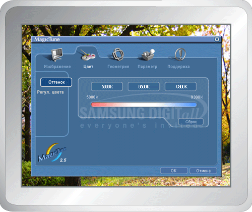

|

|
 |
MagicTune позволяет быстро и точно настраивать изображение, сохранять и затем использовать наиболее подходящие для пользователя конфигурации монитора.
- Реальныйвид экранных меню зависит от конкретной модели и может не полностьюсоответствовать описанию в руководстве пользователя.
|
|
|
Режим экранного меню (OSD) позволяет легко настраивать
параметры всех мониторов. При выборе для каждой из вкладок в верхней части окна управления
отображается общее описание пунктов подменю настройки. При выборе каждой из вкладок отображается список меню. Простой и
удобный доступ ко всем вкладкам и пунктам подменю в режиме экранного меню обеспечивает быструю
настройку параметров монитора.
|
OK
|
Подтверждение сделанных
изменений и выход из программы MagicTune.
|
|
Сброс
|
Восстановление
рекомендованных производителем значений параметров монитора в активном окне
управления.
|
|
Отмена
|
Выход из программы MagicTune
без подтверждения сделанных изменений. Если вы не сделали никаких
изменений в окне управления, нажатие кнопки "Cancel" не вызовет
никаких действий.
|

|
Позволяет
устанавливать требуемые значения параметров экрана.
|
Яркость
|
Позволяет регулировать яркость всего экрана. Если уровень яркости установлен неправильно, возможна
потеря деталей в темных зонах изображения. Настройте
яркость таким образом, чтобы обеспечить наилучшие условия для просмотра
изображения.
|
|
Контраст
|
Позволяет регулировать разницу яркости между светлыми и
темными зонами изображения. Определяет четкость изображения.
br>
|
|
MagicBright™
|
Нажмите кнопку MagicBright еще раз и выберите нужный режим.
- четыре различных режима .
- Диагональ более 19 дюймов
- Текст: Для работы с документацией или других работ, связанных с чтением большого объема текста.
- Интернет: Для работы с изображениями смешанного характера, например, текстом и графикой одновременно.
- Игры: Для просмотра
движущихся изображений, например, для игр.
- Развлечения: Для просмотра видеофильмов, например, в формате DVD или VCD.
- Диагональ менее 19 дюймов
- Текст: Для работы с документацией или других работ, связанных с чтением большого объема текста.
- Интернет: Для работы с изображениями смешанного характера, например, текстом и графикой одновременно.
- Развлечения: Для просмотра видеофильмов, например, в формате DVD или VCD.
|
|
Позволяет
настраивать "теплоту" цвета фона монитора или цвета изображения.

|
Оттенок
|
Позволяет
изменять оттенки цвета.
- Теплый - Нормальный - Холодный
- Установленный
|
|
Управление цветом
|
Позволяет настраивать цвета изображения на мониторе.
Пользователь
может настроить цвета монитора согласно своим предпочтениям.
|
Позволяет
настраивать значения параметров Позиция,
Размер и Поворот.
|
Геометрия 1
|
Позволяет настраивать значения параметров Поворот, Размер и Позиция.
|
|
Геометрия 2
|
Позволяет
настраивать значения регулировочных параметров Pincushion,
Pinbalance, Trapezoid
и Parallelogram.
- Pincushion
(Подушечность)
- Pinbalance
(Баланс подушкообразных искажений)
- Trapezoid
(Трапеция)
- Parallelogram
(Параллеллограмм)
|
|
Другие
|
Позволяет
настраивать значения регулировочных параметров Муар,
Размагничивание, угла Sidepin и угла Pinbalance.
- Муар
- Размагничивание
- Вершина угла Sidepin
- Низ угла Sidepin
- Вершина угла Pinbalance
- Низ угла Pinbalance
|
|
При настройке MagicTune можно использовать следующие опции:
|
Предпочтение
|
Загрузка диалогового окна Preferences. Используемые предпочтения отмечены в окне флажком
(символом "V"). Для включения или выключения любой предпочтительной установки
(Preference) установите курсор на флажке и щелкните на нем кнопкой мыши.
- Включить меню задач Для вызова меню MagicTune щелкните соответствующий значок в меню панели задач. Если опция [Включить меню задач] не выбрана в меню [Параметр] ' [Basic
Settings], то меню не отображаются.
- Выбрать язык- выбор языка воздействует только на язык экранных меню.
|
Отображается идентификатор и номер версии программы. Пользователю предоставляется возможность использовать функцию интерактивной справки (Help).

|
Справка
|
При необходимости получения справки по установке или использованию программы MagicTune посетите веб-сайт MagicTune или щелчком мыши откройте файлы интерактивной справки (Руководство
пользователя). Руководство пользователя открывается в обычном окне интернет-браузера.
|
|
Идентификатор пункта
|
Открывается окно с информацией о мониторе, включая дату изготовления.
|
|
Версия
|
Отображается номер версии программы MagicTune.
|
|

 Вкладка Изображение
Вкладка Изображение
 Режим экранного
меню
Режим экранного
меню